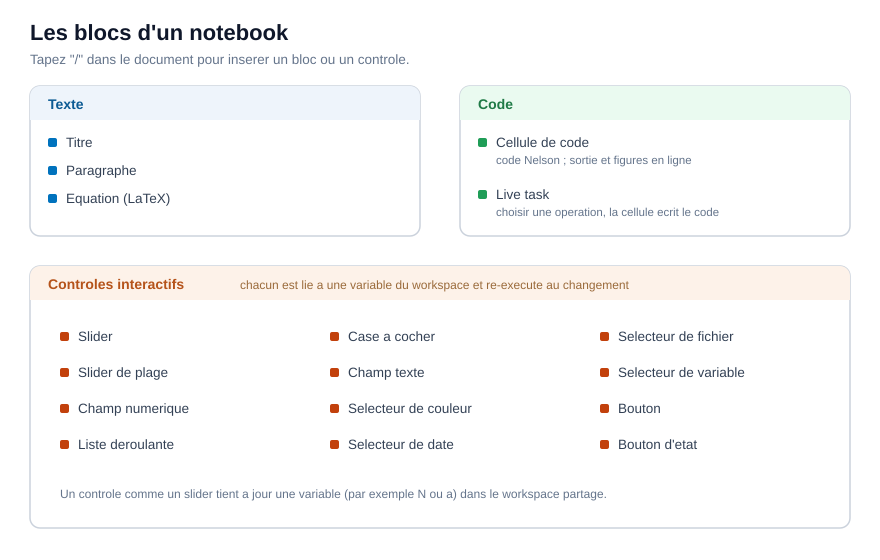

Un Notebook est une suite de blocs. Certains blocs sont du texte, un bloc exécute du code, et d'autres sont des contrôles interactifs qui pilotent une variable. Vous insérez chacun d'eux en tapant / dans le document, ou depuis le menu Insert de la barre d'outils.

Blocs de texte
Un titre et un paragraphe contiennent du texte mis en forme : des titres, des mots en gras ou en italique, et des listes. Ils portent l'explication autour du code et ne s'exécutent jamais.
Équations
Un bloc équation contient une formule LaTeX et l'affiche en ligne, à côté de votre texte. Par exemple f(x) = \sin(x)\,e^{-\lambda x} est composé comme une expression mathématique. Les équations servent uniquement à l'affichage ; elles ne sont pas évaluées.
Cellules de code
Une cellule de code contient du code Nelson. Sa marge de gauche a trois boutons d'exécution : exécuter cette cellule, exécuter jusqu'à cette cellule, et exécuter la section (une cellule de code avec le texte et les contrôles au-dessus, jusqu'au titre précédent). La barre d'outils ajoute Run all pour tout le document.
Quand vous modifiez une cellule, les cellules dont le résultat peut être périmé sont marquées. Exécuter les périmées ré-exécute seulement celles-ci et les cellules qui en dépendent, au lieu de tout le document. Effacer supprime toutes les sorties enregistrées.
Tâche interactive
Une tâche interactive est une cellule à cliquer : vous choisissez une opération et ses entrées, et la cellule écrit le code Nelson à votre place et l'exécute. C'est une manière rapide de construire une étape sans écrire le code à la main.
Contrôles interactifs
Un contrôle est lié à une variable de l'espace de travail. Quand vous déplacez ou modifiez le contrôle, il fixe cette variable et ré-exécute les cellules qui l'utilisent, si bien qu'une figure se met à jour pendant que vous ajustez une valeur. Les contrôles disponibles sont :
Par exemple, un curseur nommé Frequency lié à la variable frequency fixe cette variable à chaque déplacement, et une cellule qui trace sin(frequency * x) se redessine aussitôt.
Une vue partageable
Masquer le code replie les cellules de code et garde le texte, les contrôles et la sortie, ce qui transforme le document en un court rapport utilisable sans voir le code. Plan liste les titres pour parcourir un long document.
| Version | Description |
|---|---|
| 2.0.0 | version initiale |